|
SmilePC
1998-1999
|
|
Rishi
Moudgil,
Director & Founder Junior, Business Administration Rishi is proud to be part of the University of Michigan, which had just won the triple crown of championships (Football, Hockey, and Circle K)... all of which are his favorite things. He looks forward to K-grams and all that it offers to everyone involved. Throughout his days at U of M, you can always find him either reading, writing, swingin', or smilin'! |
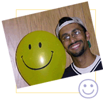 |
| 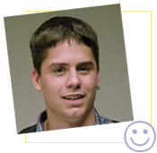 |
Steve
Yeager,
Asst. Director & Operations Director Sophomore, History & Spanish Steve likes to live life for all it is worth. He believes that this life is a gift and that everyone should enjoy life, but also reach out to others who are in need. He believes that one should never be hesitant to take a risk for fear of failure. Taking risks is the only way that anything meaningful gets accomplished. |
|
Neha
Shah,
Asst. Director & Elementary School Director Sophomore, Chemical Engineering Neha is a slightly reluctant chemical engineer who loves the color blue and chocolate. She is little but really fierce so don't mess with her. K-grams is a great opportunity for her to interact with people since engineers are normally discouraged from doing so. She also likes to tell really funny jokes. (Neha
on the LEFT)
|
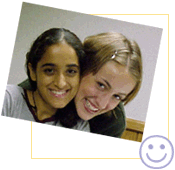 |
|
Stephanie
Hartshorn, Stephanie is super glad she got involved with K-grams and not just because it helped her learn her way around West Quad. She also loves singing, which she does constantly, and swing dancing which she still has to learn. Anybody want to teach her? (Stephanie
on the RIGHT)
|
|
Matt
Comstock,
Newsletter Editor Junior, Business Administration Matt is a Junior in Business School concentrating in Computer Info Systems. He enjoys everything from Michigan Hockey, to volunteering with Circle K, to playing golf, to making newsletters for K-grams! He loves knowing that working with K-grams gives him the opportunity to make a difference in the lives of both college kids and little kids. He wishes everyone involved a great year, and GO BLUE! |
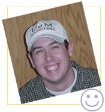 |
| 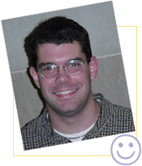 |
Matt
Armfield,
Webmaster & Publicity Sophomore, Cell Biology & Russian Studies Matt is a busy guy who loves K-grams! He is always ready to listen to anyone, and won't judge a person for what they think. Matt has discovered some new interests while in college, and is very thankful for the experiences that he has had here! |
|
Rachel
Knopf,
Service Chair Sophomore, Undecided Rachel's life is a happier kind of world because of the children in it and her love for them. Every time she sees a young person during the day and occasionally at night she can't help but smile, and she will often even say something to the extent of how cute that child is, or how wonderful children are. She has spent her whole life emersed in the world of children, and is not ashamed to admit that she can be child-like herself. She believes that K-grams will make a real and positive difference in the lives of many local children, and this makes her even happier!!! (: !smile! :) |
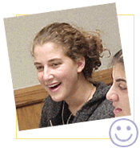 |
| 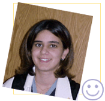 |
Mariel
Estigarribia,
Finance Manager Sophomore, Undecided (hopefully Business) Mariel likes to eat, sleep and run long distance. She's training for a marathon. In her spare time(which doesn't really exist), she likes to watch Jeopardy and General Hospital and hang out with friends. |
|
Bryn
Dodge,
Administrative Manager Sophomore, French & English Bryn enjoys sunshine and beaches, both of which can be found in abundance at the University of Michigan. She enjoys socks and elephants and is most excited to help K-grams continue to grow! |
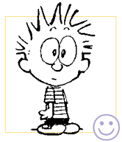 |
| 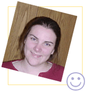 |
Erin
Krumrei,
Historian Freshman, German & Architecture Erin is very glad to be a new addition to the K-gram staff. When not studying for exams she likes to write letters to her friends that live all over the world. She hopes one day to live and work in Germany. |
|
Monique
Piegdon,
Graphic Artist B.F.A. (1996), Graphics Major & Ceramics Minor Monique has been writing to pen pals around the world since she was ten years old, so joining the K-grams staff has been a dream come true for her. When she is not working on new projects or at her day job at the University of Michigan Law Library, Monique can usually be found reading, dancing, e-mailing, or watching movies! |
| 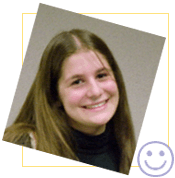 |
Eugenia
Edmonds,
Operations & Elem Teams Sophomore, Music Education (piano) Eugenia is a very happy silly girl who loves to be really busy and smile a lot. She can't wait to make huge differences in the lives of as many children as humanly possible in one lifetime, and she also can't wait to experience all that life throws at her every second of the day. She is originally from New York, has a sparkling champagne colored Toyota Camry, and loves music, soft warm things (like cats and thick mittens), and learning everything in the world. |
|
Shruti
Puri,
Operations Team Junior, Business Administration Shruti is a junior at the buisness school and is currently exploring many different career options. Shruti is invovled with many activities on campus including K-grams. She says she is doing K-grams solely because she loves kids and she loves working with them, and she hopes that she can be a good role model for them. |
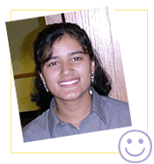 |
|
Sara
Rowe,
Elementary School Team Freshman, Undecided Sara just recently joined the K-grams crew. She loves being involved with the program and knowing that she has helped to brighten a child's day. When Sara is not working on K-grams stuff, she is either organizing service projects for circle K or playing hockey. She plays right wing on the women's club team. |
|
Lee
Ann Benkert,
Elementary School Team Junior, English Lee Ann likes to smile. Working with K-grams and frequenting the K-grams webpage spark this activity, so she suggests you try both. She also likes to laugh and believes laughter is the most beautiful sound in the world. Her least favorite sounds are those of people brushing their teeth and balloons popping, especially when done simultaneously. That's the worst. Want to know what the best is? YOU, because you're still reading this :) |
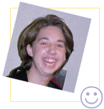 |
|
Kasie
Leigh Ruhlig,
Kids-Fair Activities Director Sophomore, Secondary Education-Math Kasie is thrilled to be a part of K-grams and helping with Kids-Fair. She can't think of anything better than watching 850 elementary schoolers having fun. She enjoys kids of all ages, all sports and almost anything outdoors (except camping!) and loves to spend an afternoon watching television and sleeping which she doesn't get to do very often. She goes by the motto Why not? rather than Why? (like when she went skydiving last summer--10,000 feet Baby!) and doesn't hesitate to say what she thinks. |